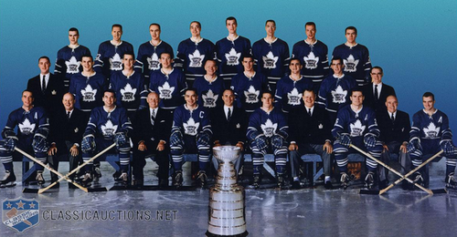

Stanley Cup Wins
The Toronto Maple leafs have been around for a long time and have won 13 cups over the years. But haven't won a cup in over 46 seasons. They are second Place to their Primary Rival the Montreal Canadiens. Who has 24 championship wins. Here we will highlight their wins as well as who they won against.
1918
Their first win was against the Montreal Canadians in 1918 where they lost the final game but had already secured the cup with a game two days prior winning 7-3.
1922
Their Second Win came 4 years later, They secured the win and ended the seasion with 0-0 against the Ottawa Senators.
1932
The next win for the Leafs was in 1932. Ten years after their previous one with a ending game of 6-4 against the New York Rangers.
1942
The Next Win was another 10 years later in 1942 against the Detroit Red Wings where the leafs Won the final game, 3-1 and secured the cup.
1945
THe leafs won again 3 years later in 1945 breaking their pattern of 10 year gaps between wins against the Detroit Red Wings with a score of 2-1 in the final game.
1947
1947 Was the first of three years in a row that the leafs won the cup. Starting out with Winning against their primary rival the Montreal Canadians. With a final game score of 2-1.
1948
The second year of their 3 year win streak was against the Detroit Red Wings. Where they won all the final games had a final game score of 7-2.
1949
The Final Year of their win streak was against the Detroit Red Wings again. They had a similar season to last and won the final game 3-1.
1951
After losing their 3 year win streak in 1950 the Leafs came back and won in 1951 against the Montreal Canadians with a final game score of 3-2.
1962
After losing the cup for 11 years in a row. The leafs broke that streak and started another 3 year winning spree starting in 1962 against the Chicago Blackhawks, where they won the final game 2-1.
1963
The second year of their second win streak matched the first where the Leafs won against the Detroit Red Wings with winning all final games and a final game score of 3-1.
1964
Their third year of their win streak was yet again against the Detroit Red Wings where they had a bit of strugle in the final games but came out on top with a final game score of 4-0.

1967
After their streak ending in 1964 the Leafs finally won the cup one more time in 1967 and thus started the 55 year drought of wins for the Leafs. The cup in 1967 was against their rival the Montreal Canadians where they won 3-1.